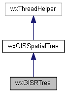
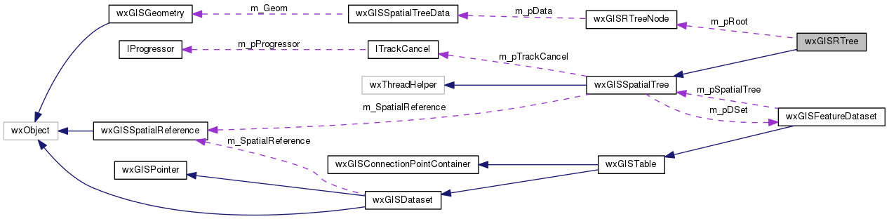

|
|
Version: 0.5.0 |


wxGISRTree Class Reference
#include <spatialtree.h>
Inheritance diagram for wxGISRTree:

Collaboration diagram for wxGISRTree:

Public Member Functions | |
| wxGISRTree (wxGISFeatureDataset *pDSet, unsigned short nMaxChildItems=64, unsigned short nMinChildItems=32) | |
| virtual void | Remove (long nFID) |
| virtual void | RemoveAll (void) |
| virtual wxGISSpatialTreeCursor | Search (const OGREnvelope &env) |
| virtual void | Insert (wxGISSpatialTreeData *pData) |
| virtual bool | HasFID (long nFID) const |
 Public Member Functions inherited from wxGISSpatialTree Public Member Functions inherited from wxGISSpatialTree | |
| wxGISSpatialTree (wxGISFeatureDataset *pDSet) | |
| virtual bool | Load (const wxGISSpatialReference &SpatRef=wxNullSpatialReference, ITrackCancel *const pTrackCancel=NULL) |
| virtual bool | IsLoading (void) const |
| virtual void | CancelLoading () |
| virtual void | Insert (const wxGISGeometry &Geom, long nFID) |
| virtual void | Change (const wxGISGeometry &Geom, long nFID) |
Protected Member Functions | |
| virtual wxGISRTreeNode * | ChooseSubtree (wxGISRTreeNode *pNode, const OGREnvelope &Env) |
| virtual wxGISRTreeNode * | InsertInternal (wxGISRTreeNode *pInsertNode, wxGISRTreeNode *pStartNode, bool bIsFirstInsert=true) |
| virtual wxGISRTreeNode * | OverflowTreatment (wxGISRTreeNode *pNode, bool bIsFirstInsert) |
| virtual void | Reinsert (wxGISRTreeNode *pNode) |
| virtual wxGISRTreeNode * | Split (wxGISRTreeNode *pNode) |
| Protected Member Functions inherited from wxGISSpatialTree | |
| virtual wxThread::ExitCode | Entry () |
| bool | CreateAndRunLoadGeometryThread (void) |
| void | DestroyLoadGeometryThread (void) |
Protected Attributes | |
| wxGISRTreeNode * | m_pRoot |
| unsigned short | m_nMaxChildItems |
| unsigned short | m_nMinChildItems |
| Protected Attributes inherited from wxGISSpatialTree | |
| wxGISFeatureDataset * | m_pDSet |
| long | m_nReadPos |
| short | m_nPreloadItemCount |
| bool | m_bIsLoaded |
| wxMutex | m_Mutex |
| wxGISSpatialReference | m_SpatialReference |
| ITrackCancel * | m_pTrackCancel |
Detailed Description
The wxGIS R-Tree implementation. R-trees are tree data structures used for spatial access methods, i.e., for indexing multi-dimensional information such as geographical coordinates, rectangles or polygons. The R-tree was proposed by Antonin Guttman in 1984 and has found significant use in both theoretical and applied contexts.
Library: page_libs_datasource
The documentation for this class was generated from the following files:
- D:/work/projects/wxGIS/include/wxgis/datasource/spatialtree.h
- D:/work/projects/wxGIS/src/datasource/spatialtree.cpp
- Generated on Mon Oct 28 2013 04:48:00 for wxGIS by
 1.8.5
1.8.5